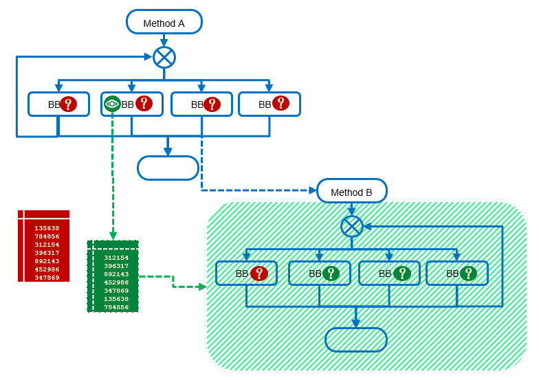

Delayed Reaction
General description
When an environment check is executed and the reaction is immediate, a hacker can guess when the check is done and try to bypass it.
The concept of the delay reaction is to prevent that.
The check is done, and the reaction is performed later. This make it hard for the attacker to make a link between the 2 events.
This mechanism is implemented with the opaque predicate.
When a check is done, the opacity table related to this check will be updated.
We can define with the command opacity control the code that will be impacted by this check.
Then if the check is wrong, the related opacity table will be wrong as well and the dependent code will probably crash at the execution

2 types of delayed reaction
Delay
If no check is performed, no reaction is performed.
Once the check is done, the reaction on the protected code will behave positively or negatively according to the result of the check.
Strong Delay
If no check is performed, the code protected by the opaque predicates will fail.
If the check is performed upstream, the reaction will behave positively or negativaly according to the result of the check.
With this configuration, the checks have to be performed before the execution of the protected code, regarding the control flow.
Configuration
To implement this mechanism you have to combine the checks configuration and opaque predicate configuration. The check must be set in "delayed" or "delayed-strong" mode.
-kop-check-manifest,delayed <classic method designator> or -kop-check-manifest,delayed-strong <classic method designator>
The Opacity control should define the code area impacted by the reaction
-kop-opacity-control,include:manifest <code area designator>
Note on application crash
Warning
When using delayed reaction, information about the environment check which has failed will not be resent in stack trace.
Security note
Security
The opaque predicate of reaction must not be applied on one methods only.
More the code dependent of the opacity table is large, more the protection will be efficient.
Example
-kop-check-manifest,delayed public class package.name.Main {public static void main(...);}
-kop-opacity-control,include:manifest public class com.nagra.kop.demo.ui.login.LoginActivity { void updateUiWithUser(...); }